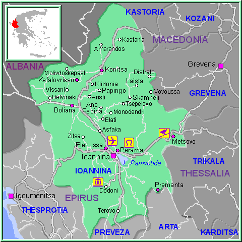
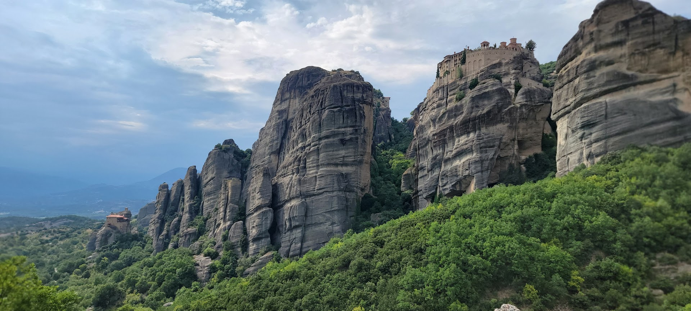

Map
Ioannina is a city in northwestern Greece, towards Albania. It is known for its large lake in the center of town,
The city is home to a number of interesting attractions, including Pamvotida Lake, the Byzantine Museum, and my Great Uncle who is 98!
He goes white water rafting and lifts weights every day. He is a beast. I don't understand how he's so strong.

Metsovo
Metsovo is a small town in the mountains of northwestern Greece. The town is known for its traditional stone houses,
cobbled streets, and beautiful views of the surrounding mountains. Metsovo is also home to many monasteries atop the mountains.
The mountain ranges are truly a sight to see. The best time to visit Metsovo is in the summer, when the weather is warm and the mountains are green.
I took the picture above last year, when I went with my Great Uncle. He said he wanted to go climb the mountains, and race me to the top. I don't
know how he is immortal.